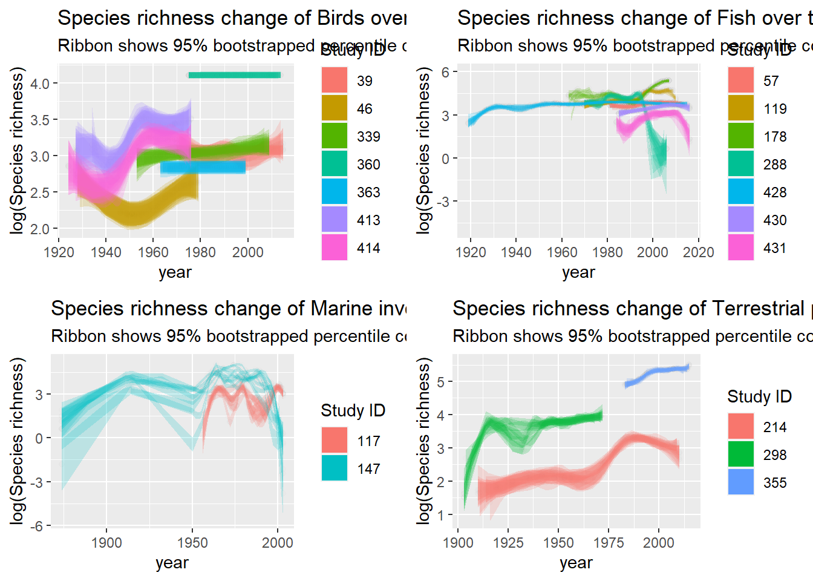

#install.packages(c("here", "dplyr", "vroom", "tidyr", "purrr")) #1st post
#install.packages(c("ggplot2", "cowplot", "glue", "ggtext", "ggrepel")) #2nd post
#install.packages(c("broom", "modelr", "mgcv", "pander")) #3rd post
library(broom)
library(modelr)
library(mgcv)
library(pander)
library(ggplot2)
library(cowplot)
library(glue)
library(here)
broom package
broom organizes the messy output we get from summary(model), giving us a tibble with different parameters present in our models. broom also supports working within lists, as we have seen in our previous posts. In short, when we need to perform several statistical analysis, with broom, we can nest the variables and run them all at once. To start, this package has three main functions tidy(), glance() and augment(). Each one gives us different parameters.
As the package’s page says:
tidy() summarizes information about model components glance() reports information about the entire model augment() adds informations about observations to a dataset
Let’s check them out. I will keep using the data frame rich_plot, we were evaluating last time. I will build a non-sense linear model here, using species richness and year.
model <- rich_plot %>%
lm(richness ~ year, .)Using the traditional way, we can check the output of our model with summary():
summary(model)
Call:
lm(formula = richness ~ year, data = .)
Residuals:
Min 1Q Median 3Q Max
-77.25 -48.53 -30.36 -4.44 814.31
Coefficients:
Estimate Std. Error t value Pr(>|t|)
(Intercept) -759.78221 171.14066 -4.440 9.43e-06 ***
year 0.41619 0.08628 4.824 1.50e-06 ***
---
Signif. codes: 0 '***' 0.001 '**' 0.01 '*' 0.05 '.' 0.1 ' ' 1
Residual standard error: 93.61 on 2364 degrees of freedom
Multiple R-squared: 0.009747, Adjusted R-squared: 0.009328
F-statistic: 23.27 on 1 and 2364 DF, p-value: 1.499e-06tidy()
With broom we get the same but more organized. Using tidy(), we get the same as in Coefficients in the summary(...) output: estimates of our model, error, t value and p value
tidy(model)# A tibble: 2 × 5
term estimate std.error statistic p.value
<chr> <dbl> <dbl> <dbl> <dbl>
1 (Intercept) -760. 171. -4.44 0.00000943
2 year 0.416 0.0863 4.82 0.00000150glance()
glance() gives us the final part of the summary(..) output: r squared, Residual standard error, F-statistic, degrees of freedom etc, but also AIC values.
glance(model)# A tibble: 1 × 12
r.squared adj.r.squared sigma statistic p.value df logLik AIC BIC
<dbl> <dbl> <dbl> <dbl> <dbl> <dbl> <dbl> <dbl> <dbl>
1 0.00975 0.00933 93.6 23.3 0.00000150 1 -14096. 28197. 28215.
# ℹ 3 more variables: deviance <dbl>, df.residual <int>, nobs <int>augment()
Whereas augment gives us fitted values, residuals etc.
augment(model)# A tibble: 2,366 × 8
richness year .fitted .resid .hat .sigma .cooksd .std.resid
<int> <dbl> <dbl> <dbl> <dbl> <dbl> <dbl> <dbl>
1 26 1923 40.5 -14.5 0.00352 93.6 0.0000428 -0.156
2 27 1926 41.8 -14.8 0.00322 93.6 0.0000405 -0.158
3 21 1927 42.2 -21.2 0.00313 93.6 0.0000808 -0.227
4 27 1929 43.0 -16.0 0.00294 93.6 0.0000434 -0.172
5 34 1930 43.5 -9.46 0.00285 93.6 0.0000146 -0.101
6 30 1931 43.9 -13.9 0.00276 93.6 0.0000305 -0.148
7 45 1932 44.3 0.707 0.00267 93.6 0.0000000765 0.00756
8 50 1933 44.7 5.29 0.00258 93.6 0.00000415 0.0566
9 49 1934 45.1 3.87 0.00250 93.6 0.00000215 0.0414
10 50 1935 45.5 4.46 0.00241 93.6 0.00000275 0.0477
# ℹ 2,356 more rowsNested models
Now that we are kinda introduced to the main functions present in broom, let’s build the same model but based on each taxa we have. For that, we have to nest our data by TAXA and then use mutate() to create a new column ('model').
broom_mod<-rich_plot %>%
filter(n_year>30) %>%
group_by(TAXA) %>%
nest()All information we have is nested within the column data. Now we can use map() to go into this column. We can use the same approach we did for the nested plots, using mutate() to create a new column (“model”) and map() to perform the model.
nested_models<-broom_mod %>%
mutate(model = map(data, ~lm(richness ~ year, data=.x)))
nested_models# A tibble: 4 × 3
# Groups: TAXA [4]
TAXA data model
<chr> <list> <list>
1 Birds <tibble [356 × 6]> <lm>
2 Fish <tibble [386 × 6]> <lm>
3 Marine invertebrates <tibble [144 × 6]> <lm>
4 Terrestrial plants <tibble [211 × 6]> <lm> Now we have both data and model’s column nested. We need to use one of the broom’s functions here to get the information. Let’s use tidy, for example. For that, we simply create a new column, using the same approach mutate() and map(), saying that we want to access the column model and get the tidy output. Finally we unnest the column we just created with unnest()
nested_models %>% mutate(coefs = map(model, tidy, conf.int = TRUE)) %>%
unnest(coefs)# A tibble: 8 × 10
# Groups: TAXA [4]
TAXA data model term estimate std.error statistic p.value conf.low
<chr> <list> <lis> <chr> <dbl> <dbl> <dbl> <dbl> <dbl>
1 Birds <tibble> <lm> (Int… -5.02e+2 64.2 -7.81 6.63e-14 -6.28e+2
2 Birds <tibble> <lm> year 2.66e-1 0.0325 8.18 5.00e-15 2.02e-1
3 Fish <tibble> <lm> (Int… -8.89e+2 262. -3.39 7.71e- 4 -1.40e+3
4 Fish <tibble> <lm> year 4.78e-1 0.132 3.62 3.33e- 4 2.19e-1
5 Marine in… <tibble> <lm> (Int… -1.89e+3 476. -3.97 1.15e- 4 -2.83e+3
6 Marine in… <tibble> <lm> year 9.83e-1 0.241 4.08 7.43e- 5 5.07e-1
7 Terrestri… <tibble> <lm> (Int… -3.60e+3 389. -9.25 2.65e-17 -4.37e+3
8 Terrestri… <tibble> <lm> year 1.87e+0 0.198 9.47 6.02e-18 1.48e+0
# ℹ 1 more variable: conf.high <dbl>We could also use glance instead of tidy if we want the .fitted values, for example
nested_models %>% mutate(gl = map(model, glance, conf.int = TRUE)) %>%
unnest(gl)# A tibble: 4 × 15
# Groups: TAXA [4]
TAXA data model r.squared adj.r.squared sigma statistic p.value df
<chr> <list> <lis> <dbl> <dbl> <dbl> <dbl> <dbl> <dbl>
1 Birds <tibble> <lm> 0.159 0.157 13.2 67.0 5.00e-15 1
2 Fish <tibble> <lm> 0.0330 0.0305 53.4 13.1 3.33e- 4 1
3 Marine … <tibble> <lm> 0.105 0.0987 68.7 16.7 7.43e- 5 1
4 Terrest… <tibble> <lm> 0.300 0.297 86.8 89.8 6.02e-18 1
# ℹ 6 more variables: logLik <dbl>, AIC <dbl>, BIC <dbl>, deviance <dbl>,
# df.residual <int>, nobs <int>We use the same approach for different models. Let’s perform, for example, a gam model, getting the coefs and r squared of each model, now using only one nested function.
rich_plot %>%
filter(n_year>30) %>%
group_by(TAXA) %>%
nest() %>%
mutate(model = map(data, ~gam(richness ~ s(year, bs = "cs",k=-1), data=.x)),
coefs = map(model, tidy, conf.int = TRUE),
Rsq = map_dbl(model, ~summary(.)$r.sq)) %>%
unnest(coefs)# A tibble: 4 × 9
# Groups: TAXA [4]
TAXA data model term edf ref.df statistic p.value Rsq
<chr> <list> <lis> <chr> <dbl> <dbl> <dbl> <dbl> <dbl>
1 Birds <tibble> <gam> s(ye… 1.69 9 7.14 0 0.159
2 Fish <tibble> <gam> s(ye… 6.61 9 3.85 6.33e-6 0.0740
3 Marine invertebrat… <tibble> <gam> s(ye… 7.59 9 15.5 0 0.488
4 Terrestrial plants <tibble> <gam> s(ye… 6.87 9 13.7 0 0.364 We can also perform ANOVA
rich_plot %>%
filter(n_year>30) %>%
group_by(TAXA) %>%
nest() %>%
mutate(model = purrr::map(data, ~aov(richness ~ CLIMATE, data=.x)),
coefs = purrr::map(model, tidy, conf.int = F)) %>%
unnest(coefs)# A tibble: 8 × 9
# Groups: TAXA [4]
TAXA data model term df sumsq meansq statistic p.value
<chr> <list> <lis> <chr> <dbl> <dbl> <dbl> <dbl> <dbl>
1 Birds <tibble> <aov> CLIM… 1 1.95e3 1.95e3 9.65 2.05e- 3
2 Birds <tibble> <aov> Resi… 354 7.15e4 2.02e2 NA NA
3 Fish <tibble> <aov> CLIM… 1 1.85e5 1.85e5 75.1 1.27e-16
4 Fish <tibble> <aov> Resi… 384 9.48e5 2.47e3 NA NA
5 Marine invertebr… <tibble> <aov> CLIM… 1 9.97e4 9.97e4 21.8 6.88e- 6
6 Marine invertebr… <tibble> <aov> Resi… 142 6.49e5 4.57e3 NA NA
7 Terrestrial plan… <tibble> <aov> CLIM… 1 1.05e6 1.05e6 181. 3.90e-30
8 Terrestrial plan… <tibble> <aov> Resi… 209 1.21e6 5.77e3 NA NA Tukey test and so on
rich_plot %>%
filter(n_year>30) %>%
group_by(TAXA) %>%
nest() %>%
mutate(model = purrr::map(data, ~TukeyHSD(aov(richness ~ CLIMATE, data=.x))),
coefs = purrr::map(model, tidy, conf.int = F)) %>%
unnest(coefs)# A tibble: 4 × 10
# Groups: TAXA [4]
TAXA data model term contrast null.value estimate conf.low
<chr> <list> <list> <chr> <chr> <dbl> <dbl> <dbl>
1 Birds <tibble> <TukeyHSD> CLIM… Tempera… 0 7.58 2.78
2 Fish <tibble> <TukeyHSD> CLIM… Tempera… 0 54.6 42.2
3 Marine invert… <tibble> <TukeyHSD> CLIM… Tempera… 0 55.5 32.0
4 Terrestrial p… <tibble> <TukeyHSD> CLIM… Tropica… 0 191. 163.
# ℹ 2 more variables: conf.high <dbl>, adj.p.value <dbl>We can also nest the data by different groups, i.e. taxa and study id, in order to perform a different model for each study site and taxa.
rich_plot %>%
filter(n_year>30) %>%
group_by(TAXA,id) %>%
nest() %>%
mutate(model = map(data, ~gam(richness ~ s(year, bs = "cs",k=-1), data=.x)),
coefs = map(model, tidy, conf.int = TRUE),
Rsq = map_dbl(model, ~summary(.)$r.sq)) %>%
unnest(coefs)# A tibble: 24 × 10
# Groups: TAXA, id [24]
id TAXA data model term edf ref.df statistic p.value Rsq
<dbl> <chr> <list> <lis> <chr> <dbl> <dbl> <dbl> <dbl> <dbl>
1 39 Birds <tibble> <gam> s(ye… 7.98 9 6.13 1.23e-5 0.538
2 46 Birds <tibble> <gam> s(ye… 7.88 9 39.3 0 0.884
3 57 Fish <tibble> <gam> s(ye… 7.29 9 12.2 1.80e-7 0.774
4 117 Marine inve… <tibble> <gam> s(ye… 8.33 9 4.36 4.04e-4 0.438
5 119 Fish <tibble> <gam> s(ye… 8.50 9 29.3 0 0.866
6 147 Marine inve… <tibble> <gam> s(ye… 3.72 9 0.852 9.11e-2 0.0979
7 148 Fish <tibble> <gam> s(ye… 7.85 9 84.1 0 0.953
8 178 Fish <tibble> <gam> s(ye… 5.84 9 21.6 0 0.835
9 214 Terrestrial… <tibble> <gam> s(ye… 7.45 9 50.0 0 0.837
10 278 Fish <tibble> <gam> s(ye… 7.23 9 22.1 0 0.835
# ℹ 14 more rowsJust for information, if you are using the latest version of dplyr (1.0.0), you can use nest_by() instead of group_by() and nest(). With this approach we skip using mutate and map and use summarise() instead.
rich_plot %>%
filter(n_year>30, CLIMATE=="Temperate") %>%
ungroup %>%
nest_by(TAXA,id) %>%
mutate(model = list(gam(richness ~ s(year, bs = "cs",k=-1), data=data))) %>%
summarise(tidy(model, conf.int = TRUE))# %>% # A tibble: 19 × 7
# Groups: TAXA, id [19]
TAXA id term edf ref.df statistic p.value
<chr> <dbl> <chr> <dbl> <dbl> <dbl> <dbl>
1 Birds 39 s(year) 7.98 9 6.13 0.0000123
2 Birds 46 s(year) 7.88 9 39.3 0
3 Birds 339 s(year) 5.59 9 7.03 0
4 Birds 360 s(year) 3.13 9 1.15 0.0211
5 Birds 363 s(year) 0.805 9 0.313 0.0595
6 Birds 413 s(year) 6.93 9 19.0 0
7 Birds 414 s(year) 7.88 9 35.6 0
8 Fish 57 s(year) 7.29 9 12.2 0.000000180
9 Fish 119 s(year) 8.50 9 29.3 0
10 Fish 178 s(year) 5.84 9 21.6 0
11 Fish 288 s(year) 7.67 9 19.4 0
12 Fish 428 s(year) 8.77 9 56.7 0
13 Fish 430 s(year) 4.46 9 17.0 0
14 Fish 431 s(year) 5.82 9 10.8 0
15 Marine invertebrates 117 s(year) 8.33 9 4.36 0.000404
16 Marine invertebrates 147 s(year) 3.72 9 0.852 0.0911
17 Terrestrial plants 214 s(year) 7.45 9 50.0 0
18 Terrestrial plants 298 s(year) 5.58 9 10.1 0
19 Terrestrial plants 355 s(year) 8.11 9 42.7 0 Generating tables from model output
As I said before, with broom we can perform the models and report organized tables. We don’t need to copy and paste the output, risking to mess up the results. Also, if the analysis change we don’t have to delete the old tables, we simply generate a new one.
library(pander)
model_tab<-rich_plot %>%
filter(n_year>30, CLIMATE=="Temperate") %>%
ungroup %>%
nest_by(TAXA,id) %>%
mutate(model = list(gam(richness ~ s(year, bs = "cs",k=-1), data=data))) %>%
summarise(tidy(model, conf.int = TRUE))
pander(model_tab)| TAXA | id | term | edf | ref.df | statistic | p.value |
|---|---|---|---|---|---|---|
| Birds | 39 | s(year) | 7.981 | 9 | 6.132 | 1.23e-05 |
| Birds | 46 | s(year) | 7.878 | 9 | 39.29 | 0 |
| Birds | 339 | s(year) | 5.586 | 9 | 7.027 | 0 |
| Birds | 360 | s(year) | 3.131 | 9 | 1.147 | 0.02115 |
| Birds | 363 | s(year) | 0.8045 | 9 | 0.3126 | 0.05949 |
| Birds | 413 | s(year) | 6.934 | 9 | 19.03 | 0 |
| Birds | 414 | s(year) | 7.879 | 9 | 35.62 | 0 |
| Fish | 57 | s(year) | 7.292 | 9 | 12.23 | 1.805e-07 |
| Fish | 119 | s(year) | 8.504 | 9 | 29.35 | 0 |
| Fish | 178 | s(year) | 5.844 | 9 | 21.58 | 0 |
| Fish | 288 | s(year) | 7.669 | 9 | 19.42 | 0 |
| Fish | 428 | s(year) | 8.768 | 9 | 56.65 | 0 |
| Fish | 430 | s(year) | 4.459 | 9 | 17.01 | 0 |
| Fish | 431 | s(year) | 5.822 | 9 | 10.8 | 0 |
| Marine invertebrates | 117 | s(year) | 8.328 | 9 | 4.364 | 0.0004043 |
| Marine invertebrates | 147 | s(year) | 3.715 | 9 | 0.8522 | 0.09115 |
| Terrestrial plants | 214 | s(year) | 7.454 | 9 | 49.96 | 0 |
| Terrestrial plants | 298 | s(year) | 5.584 | 9 | 10.09 | 0 |
| Terrestrial plants | 355 | s(year) | 8.107 | 9 | 42.72 | 0 |
Bootstrap with modelr
We can try to perform a bootstrap (a few times) and visualize how the species richness of different taxa is changing over time.
boots_rich <- rich_plot %>%
filter(n_year>30, CLIMATE=="Temperate") %>%
ungroup %>%
group_by(TAXA,id) %>%
do(rs = modelr::bootstrap(., 10)) %>%
unnest(rs) %>%
group_by(TAXA,id,.id) %>%
nest() %>%
mutate(model = map(data, ~augment(gam(richness ~ s(year, bs="cs", k=-1),
family = poisson(link="log"),
data = as.data.frame(.$strap))))) %>%
unnest(model)We have taxa, study id and .id representing each bootstrap.
boots_rich# A tibble: 8,980 × 12
# Groups: TAXA, id, .id [190]
TAXA id .id data richness year .fitted .se.fit .resid .hat
<chr> <dbl> <chr> <list> <int> <dbl> <dbl> <dbl> <dbl> <dbl>
1 Birds 39 01 <tibble> 24 2014 3.09 0.0650 0.412 0.0932
2 Birds 39 01 <tibble> 20 1986 2.99 0.0458 0.0443 0.0415
3 Birds 39 01 <tibble> 18 1998 3.00 0.0432 -0.472 0.0375
4 Birds 39 01 <tibble> 19 2009 3.06 0.0482 -0.500 0.0494
5 Birds 39 01 <tibble> 25 1992 2.99 0.0449 1.11 0.0399
6 Birds 39 01 <tibble> 16 1984 2.99 0.0467 -0.892 0.0433
7 Birds 39 01 <tibble> 21 1982 2.99 0.0483 0.243 0.0464
8 Birds 39 01 <tibble> 24 1975 3.01 0.0648 0.801 0.0853
9 Birds 39 01 <tibble> 19 1979 3.00 0.0529 -0.236 0.0562
10 Birds 39 01 <tibble> 23 2011 3.07 0.0534 0.306 0.0615
# ℹ 8,970 more rows
# ℹ 2 more variables: .sigma <lgl>, .cooksd <dbl>Using mutate() we can get both upper and lower confidence intervals
boots_ci <- boots_rich %>%
mutate(lower = .fitted - 1.96 * .se.fit,
upper = .fitted + 1.96 * .se.fit)Visualize confidence intervals with geom_ribbon().
upper_lower <- boots_ci %>%
ungroup() %>%
group_by(TAXA) %>%
nest() %>%
mutate(plot = map2(data, TAXA, ~ggplot(data = .x, aes(x=year, y = .fitted, , fill = as.factor(id)))+
geom_point(alpha=.005)+
geom_ribbon(aes(ymin=lower, ymax=upper, group=interaction(.id, as.factor(id))),linetype=0,alpha=0.2)+
ggtitle(glue("Species richness change of {.y} over time"))+
labs(subtitle = "Ribbon shows 95% bootstrapped percentile confidence interval",
fill = "Study ID",
y = "log(Species richness)")+
guides(fill = guide_legend(override.aes = list(alpha = 1)))))We can store each plot as an object
boots_birds <- upper_lower$plot[[1]]
boots_fish <- upper_lower$plot[[2]]+coord_cartesian(ylim = c(-5,6))
boots_marine<- upper_lower$plot[[3]]
boots_plants<- upper_lower$plot[[4]]And combine them with cowplot::plot_grid()
library(cowplot)
plot_grid(boots_birds, boots_fish,
boots_marine, boots_plants, ncol=2, nrow=2)
Well.. some studies seem to be 💩 fitted, others not that much. Next step, I’d check the estimates of our bootstraps, explore a bit more those well fitted models, and try to improve the bad ones.
I’m still a beginner in tidymodels. If you are interested in learning more about tidymodels / predictions / bootstraps etc, I recommend following Julia Silge’s channel on youtube.
If you find any mistakes, have suggestions or queries, please just drop me a DM on twitter or leave a comment here (hope it is working now 😄).